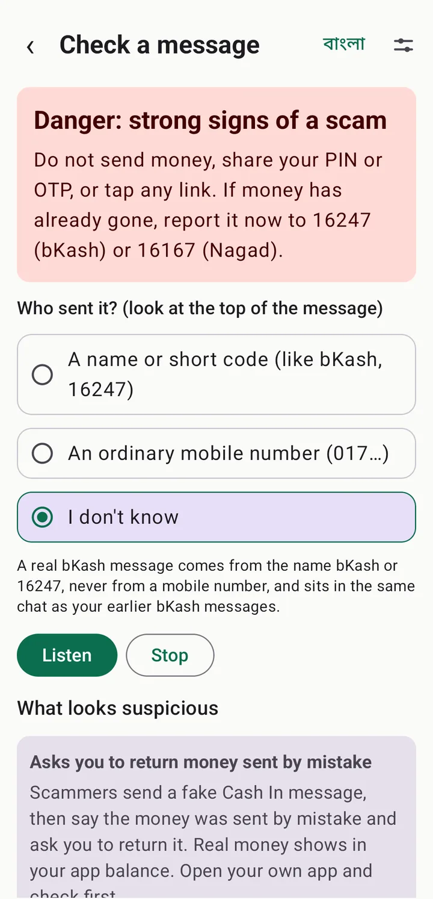
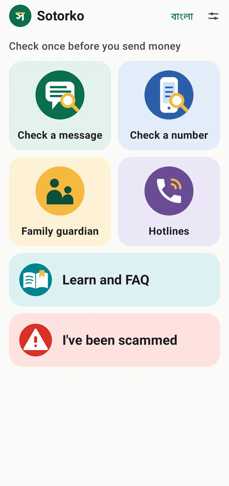
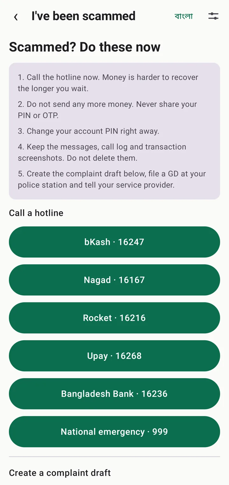
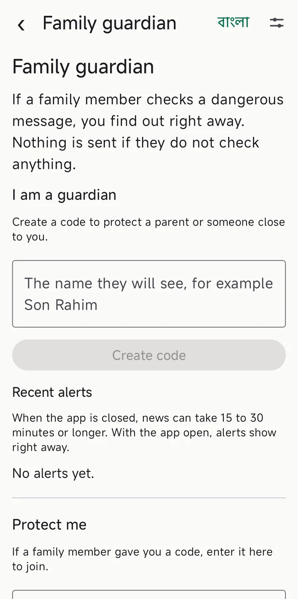
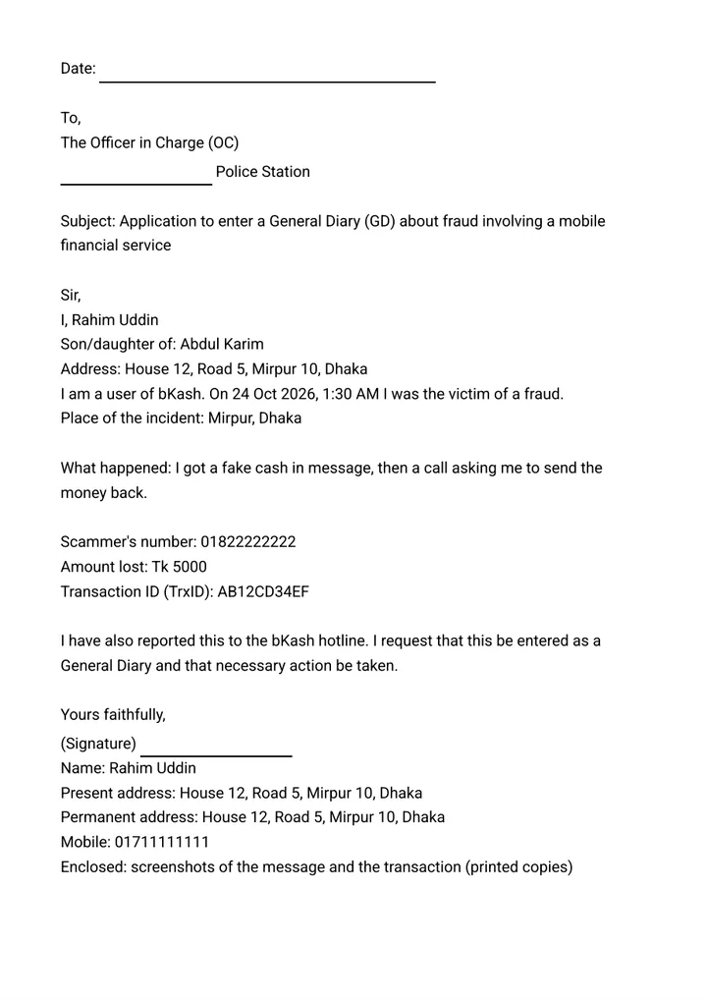

Check a message
Share a message or answer a few questions about a call. Sotorko explains the warning signs in plain language and can read them aloud.
Sotorko checks suspicious messages and numbers on your own phone, explains the warning signs in plain Bangla and reads them aloud. It helps you spot fake messages sent in the name of bKash, Nagad or your bank.
Share or paste it into Sotorko.
Choose Someone called me and answer a few questions.
Read or listen to the reasons.

Sotorko is in closed testing on Google Play. Before it opens to everyone, you can get it in two steps.
Join the group with the Google account you use for Play Store on your phone.
Once you have joined, open this link on your phone and install Sotorko.
If you have not joined the group, the app will not show on its Play page. It can take a little while to appear after you join.
Report a number or look up existing complaints. The app shows unverified reports once at least five have been submitted about the number.
Get an alert when a family member checks a message and gets a Danger result. Both people agree and either can stop alerts.
See what to do after a scam. Draft a complaint for your provider or a police GD, then print it or save it as a PDF.
Find the right number for wallet, SIM, police, or government help. Each hotline explains when to call and opens with one tap.
Read examples of common scams and what to do about them. Five golden rules and answers to common questions are available offline.
Source: Policy Research Institute, "State of DFS Consumer Protection in Bangladesh" (survey of 7,279 users in 45 districts, published around 2022).

Find message checks, hotlines, and Family guardian in one place.

See the immediate steps and call the right hotline.

Link family members and see alerts in the app.

Draft a police GD to print or save as a PDF.
Open the GD exampleThe message and details in the pictures are made-up examples. They show nobody's real information.
A fake "Cash In" message arrives, then a call: "I sent the money by mistake, please return it."
What to doOpen your own app and check your balance first. Real money shows there. If it is not there, send nothing.
Someone pretends to be from bKash, Nagad or your bank and asks for your PIN or OTP. They may ask for the code just sent to your phone.
What to doThey never ask for these. Tell no one, and hang up.
"Congratulations, you won!" or "Tap this link to get your allowance."
What to doDo not tap unknown links. You never need a fee or PIN to receive a prize or allowance, and you never send money first.
"Update your KYC now or your account will be blocked."
What to doCall the official hotline yourself, not the number in the message.
A message in the name of BRTA or the police: a vehicle fine is due, a link to pay, a short deadline and a threat of a case, sometimes a discount for paying fast.
What to doDo not pay through the link. Open the official website yourself or ask the office. The deadline and the threat are the scammer's pressure.
A group or app promises daily income for simple tasks, then asks for an activation, verification or withdrawal fee, and then another payment.
What to doA real platform does not charge you to withdraw your own money. Stop at the first fee; asking again is the sign.
"Your parcel is held, pay a redelivery fee", often with a link, and more money later for a "server error". It can follow an online shop that took a small advance.
What to doCall the courier on its official number. Do not pay repeated charges; the parcel may be only an excuse.
Someone says a case has been filed against you, then asks for money, your PIN or bank details, or tells you to call a number.
What to do999 and the police never ask for a PIN or bank details. Hang up and call 999 or your station yourself. The number on the screen can be faked.
A call or chat says your relative has had an accident or is in trouble and you must send money by bKash or Nagad now, sometimes with a copied voice or a hacked account.
What to doBefore you send anything, call that person on a number you already have, or another relative.
It never asks for SMS, call log or contacts permission. Normally only the message you share or paste is checked. If you turn on automatic checks in Settings, Sotorko also reads the notifications of new messages from SMS, WhatsApp, Messenger, imo, Viber and Telegram, checks them on your phone and keeps nothing. It warns you only when a message has red flags.
No. Sotorko looks for known scam patterns. A new kind of scam, or one worded differently, can slip past. If in doubt, call the hotline.
Its rules follow scam patterns described by bKash, the government's cyber security team (BGD e-GOV CIRT), the police and news reports. The checking happens on your phone, and the app learns nothing from your messages. New kinds of scams reach it only through app updates, so it can miss new or unusual ones.
Usually within seconds, even when the app is closed, because a push notification is sent to the guardian's phone. If a phone blocks background messages (a battery saver, for example), it can take about 15 minutes or more. The notification never contains the message text. Repeat message alerts are skipped for 24 hours after delivery, and each guardian link accepts one alert per minute.
No. Only if you join "Family guardian" with your consent, and a message is found dangerous, that message goes to the guardian you chose.
No. An online GD is filed in the police's official Online GD system, with your own national ID, a live photo and an OTP. Sotorko writes what to say and shows you the steps.
Yes, the letter follows the official generic GD format used across Dhaka Metropolitan Police and Bangladesh Police stations: date, Officer in Charge, parents' names, national ID number, present and permanent addresses, incident facts, and prayer for record. If your station has its own printed form, the draft helps you fill it in accurately.
No. What others report is shown only as "reports", unverified claims. No verdict is given about anyone.
No. Sotorko is an independent app. bKash, Nagad and other names belong to their owners.
It is in closed testing on Google Play now. Join the testers group, then download it from Google Play; the steps are in the "Get the app" section of this page.
Azimul Kabir Apu, an independent developer.